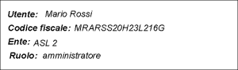

UI Panels - scheda del pannello [UserInfoPanel]
In questa scheda è descritto il pannello UserInfoPanel, in termini di:
- riferimento alla documentazione di dettaglio dell'elemento del metamodello utilizzabile durante la modellazione
- uno o più snapshot che rappresentano graficamente il pannello
- una descrizione del pannello che ne descrive l'utilizzo e le possibili varianti
- elenco degli eventi gestibili (implicitamente o esplicitamente) relativamente al pannello
Identificativo e riferimenti di dettaglio
La documentazione metamodeldoc di dettaglio del pannello UserInfoPanel è disponibile
qui.
Descrizione
Lo UserInfoPanel è un pannello utilizzato per visualizzare le informazioni
relative all'utente selezionato, che tipicamente sono:
- il nome ed il cognome dell'utente
- il codice fiscale dell'utente
- l'ente di appartenenza
- il ruolo
Immagini esemplificative

fig.1 - esempio